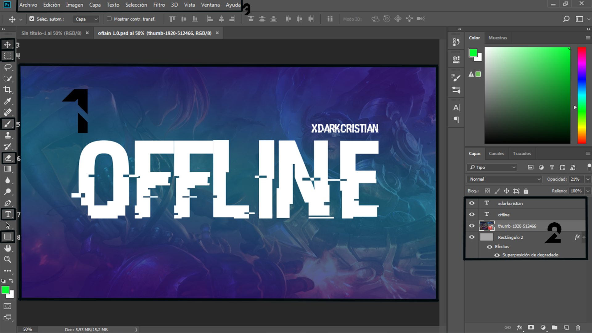

Objetivos
Comprender conceptos básicos de Photoshop
Aprender sobre las herramientas básicas
Comprender conceptos básicos de Photoshop
Aprender sobre las herramientas básicas

Como podéis ver , aquí tenemos una captura de pantalla de una edición de imagen en photoshop . He marcado algunas secciones y opciones con números para poder explicar detalladamente en que consisten.
Es importante que estos elementos los conozcamos , ya que es imprescindible para un uso correcto del programa. No os preocupéis si al principio no queda muy claro , ya que con el uso aprenderemos a manejarlos con soltura.
Obra publicada con Licencia Creative Commons Reconocimiento Compartir igual 4.0